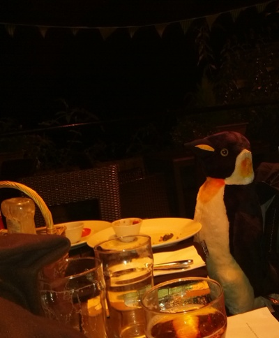

The meeting was held on Friday 11th October 2013, between 7:30pm and 10pm, at The Granta, Newnham Rd, Cambridge.
In Attendance:
- Matthew Ireland (Chair,
mti20)
- Daniel Richman (Secretary, Sysadmin,
djr61)
- Charles Board (Junior Treasurer, Sysadmin,
cvrb2)
- Richard Whitehouse (Sysadmin,
rjw201)
- Malcolm Scott (Sysadmin,
mas90)
- Andrew Cooper (Sysadmin,
amc96)
- Edward Lilley (New Sysadmin,
ejl44)
- Matt Boyd (New Sysadmin,
mab211)
- Joshua Hunt (New Sysadmin,
jh861)
Apologies for absence:
- Daniel Thomas (Sysadmin,
drt24)
- Michael Hsu (Sysadmin,
mh701)
Before the meeting, members of the current sysadmin team met potential new sysadmins Matt Boyd, Joshua Hunt and Edward Lilley to chat to them about what we do and discuss whether to invite them to join the team. Actual decisions were part of the meeting and are therefore minuted below.
Matters arising from previous meeting:
- The Minutes of the previous meeting were approved.
-
Actions assigned to "executive" (sysadmins and committee):
-
Go through opt-out emails, attempt to identify why they left, and update
ex-members.txt as appropriate.
- Not yet done.
- This action was clarified: when people ask to unsubscribe from the mailing list we must terminate their membership. We offer "do what we do to people that graduate" (retain membership, forwarding, but without ability to login) or "forget about you as much as feasibly possible" - terminated refers to the latter.
- Action (Andrew).
-
Matthew's Actions:
-
Email ThirdLight Re: sponsorship.
- ThirdLight replied, however, we want to get more details on what hardware is available first.
- Action (Matthew): Email again, requesting more specific details on hardware offered.
- Action (Amar): Investigate a cash donation.
-
Sysadmins' Actions:
-
Add symlinks to logs in users'/societies' home directories.
- Not yet done.
- Action (Richard).
-
Keep eye on logs for referers to work out who links to
www.srcf.ucam.org URLs.
- Unnecessary; see
www.srcf.ucam.org deprecation discussion below.
-
Daniel R's Actions:
-
Collect stats on how many societies use PHP, other CGI, just static content, Apache-specific features (
.htaccess), ...
- Results
- Daniel noted that these figures do not take into consideration the old practise of putting a placeholder page in
public_html; this will have caused false positives.
Exceptional Items:
-
Ratification of new sysadmins
- It was proposed that we don't give new sysadmins (in general) access to
pyro, ash and woozle until they have been a sysadmin for 1 year - damage limitation, should something bad happen. There were no objections.
-
Michael Hsu
- Daniel met him at end of Easter term 2013, and became a sysadmin. He has been active, processing requests to the shared mailbox.
- Matt Boyd
- Joshua Hunt
-
Edward Lilley
- Having met all three before the meeting, it was agreed that all could join the sysadmin team.
-
Provision of VM to CU Eco Racing
- They have offered to donate money in return.
-
CUER would like a custom Apache config ...
- We should only offer VMs when that's the best solution to their problem.
- Do we want to set a precedent?
- Action (Daniel): Email to find out what they actually are trying to do with Apache (completed on the spot).
-
... and have 50GB of storage for an open source Dropbox style application.
- We have sufficient space on pip to give this to them immediately.
- Approved, pending donation.
- Action (Daniel): Email them to agree (to quota increase) and ask for a donation (completed on the spot).
-
Existing sysadmins: are there any that we should get in contact with?
- Action (sysadmins): Email inactive sysadmins and ask them if they would like help in order to get started with common sysadmin tasks.
- Action (sysadmins): Disable "-adm" accounts that have never logged in (and hence have never had their password changed), as they constitute a security vulnerability (completed on the spot).
-
Dinner (8th December)
-
Menu & wine
- No canapes on account of cost.
- In the past, we have had two options for each of starter, main course and desert - one of which was vegetarian. The vegetarian options were not chosen by anyone last year.
- Action (executive): read through the menu options (food wine) post-meeting, and then the committee will arrange some sort of email based discussion or vote. It was stressed that this must be done ASAP.
-
Publicity
- We don't want to harass our members, the majority of which would not be interested.
- We don't have much capacity: inviting 7000+ members is infeasible.
-
Two phases of "inviting" were proposed:
- Invite {past present} × {sysadmins committee}.
- Open up remaining places to public/members.
- Action (Amar): Invite people to the dinner.
-
Sponsorship
- We would like to keep the ticket price under £40.
- We are happy to state that the dinner is sponsored by
<company>, to a reasonable extent.
-
Miscellaneous
- Action (Charles): Investigate whether we need to pay VAT.
-
Replacement hard drives and capacity
-
Our current situation:
- We have 4 500GB drives in RAID10 (giving 1TB of usable space).
- When a drive fails, we replace it with a spare, and then buy a new 500GB spare.
- We need more disk space.
-
Proposed strategy:
- As disks fail, replace them with bigger disks, initially only using the first 500GB of the larger disk.
- Once we've replaced the full set, enlarge the raid.
- We may want more expensive "enterprise" drives since they are more reliable.
-
Ballpark figures:
|
500GB |
1TB |
2TB |
3TB |
| Standard, with 2-year warranty |
£40 |
£50 |
£70 |
£90 |
| "Enterprise" drives with a 5-year warranty |
|
£75 |
£105 |
£150 |
- The above strategy using 3TB non-enterprise disks was approved by the Treasurer. We did not discuss the enterprise-drives option fully.
- Action (executive): Having decided which disks to use, start implementing the above strategy.
-
Precise schedule for discontinuing support for
http://*.srcf.ucam.org/
- We need to transition websites currently hosted at
www.srcf.ucam.org, thereby making name.{user,soc}.srcf.net the primary address.
- New users/societies have
srcf.net URLs only.
- Opt-in transition to
srcf.net has been available via a control panel for a while now.
-
Plan:
- Pester societies that have not yet migrated to do so.
- After the deadline of 1st January, we will forcefully migrate the remaining societies. This will probably break their websites.
- We intend to keep
ucam.org redirects for as long as we can.
- Action (Malcolm): Give Matthew the list of societies that should be mailed (i.e., societies that have not yet migrated).
- Action (Matthew): Pester those societies.
-
Tux was photographed.

Any Other Business:
-
Mythic Beasts
- ... offered us two old servers, which we gratefully accepted.
- One is sat in CUSU not in the rack.
- One has become "pyro".
- Woozle is now used solely for CUSU - they need the space.
-
ThirdLight
- ... have offered hardware and/or a cash donation.
- Matthew has emailed to ask if we could have more time to decide what their sponsorship would be best used on.
-
Freshers' squash
- Daniel & Andrew apologised for their absence.
- All preparations bar food have been made.
- Action (Charles): Get food for the squash.
-
Control panel
- We would like a control panel.
- Initial plan: cut down sysadmin work by checking basics before emailing
sysadmins@, rather than having the control panel actually perform any administrative actions.
-
Action (Richard):
- talk to Andrew Ryrie about the progress he's made.
- merge Malcolm's, Andrew's and others' work on control panels in various forms.
- move the new society page into the control panel.
-
"Anything but CGI" (hydra et al.)
- Action (sysadmins): Think about creating a test environment and plan a migration strategy.
-
"Rewriting pip"
- This refers to rewriting the SRCF's infrastructure from scratch (so named on account of the majority of our services being hosted on pip).
- Amar was thinking of / has created a plan to rewrite pip.
- It was noted that while originally this was intended to be "while we virtualise it", these are largely independent tasks and should be considered separately.
- There may be tasks where the ratio of effort to benefit to users or sysadmins is higher.
-
Virtualising pip
- It was noted that the discussion of four things seems to come under this banner and they should be considered separately.
-
"virtualise pip"
- This would be convenient for various maintenance tasks.
-
It was proposed to Blue Pill pip - i.e., a single XenServer hosting a single VM, with the same hardware and storage as we currently use.
- This would incur (significant) downtime.
- This would be better than what we have currently.
- Should we have a dedicated
/home NFS server / filer?
-
Split off services into separate virtual machines (shell, web, databases, email, ...)
-
Malcolm noted that our current setup is not necessarily bad:
- We want a VM responsible for hosting our /home NFS; a role currently served by pip.
- It makes sense to have high load services on that server to reduce overhead; i.e., web and email.
- This quickly approaches a description of our current setup.
-
There are no longer any "low hanging fruit" services to move into VMs.
-
mailman?
- We would have to hub/multiplex mail. A plan involving transitioning to
lists.srcf.net was suggested.
- This causes very little load anyway.
-
MySQL? Postgres?
- Should be fairly straightforward.
- No timeline was set / intention expressed to do this, and this is therefore deferred until the next meeting.
- Use the current 'pip' hardware to offer VMs to users.
-
News server
- ... has been broken for ages.
- It has fairly little use. Should we remove it?
- This was deferred until the next meeting.
Actions Summary:
-
Amar
- Investigate a cash donation from ThirdLight.
- Invite people to the dinner.
-
Andrew
- Go through opt-out emails, attempt to identify why they left, and update ex-members.txt as appropriate.
-
Charles
- Get food for the squash.
- Investigate whether we need to pay VAT for the dinner.
-
Daniel
- Email CUER to agree to quota increase and ask for a donation.
- Email CUER to find out what they actually are trying to do with Apache.
-
Malcolm
- Give Matthew the list of societies that should be mailed about migrating their websites to
srcf.net.
-
Matthew
- Email ThirdLight again, requesting more specific details on hardware offered.
- Pester societies about migrating their websites to
srcf.net.
-
Richard
- Add symlinks to logs in users'/societies' home directories.
- Merge Malcolm's, Andrew's and others' work on control panels in various forms.
- Move the new society page into the control panel.
- Talk to Andrew Ryrie about the progress he's made on the control panel.
-
Sysadmins
- Disable "-adm" accounts that have never logged in (and hence have never had their password changed), as they constitute a security vulnerability (completed on the spot).
- Email inactive sysadmins and ask them if they would like help in order to get started with common sysadmin tasks.
- Think about creating a test environment and plan a migration strategy.